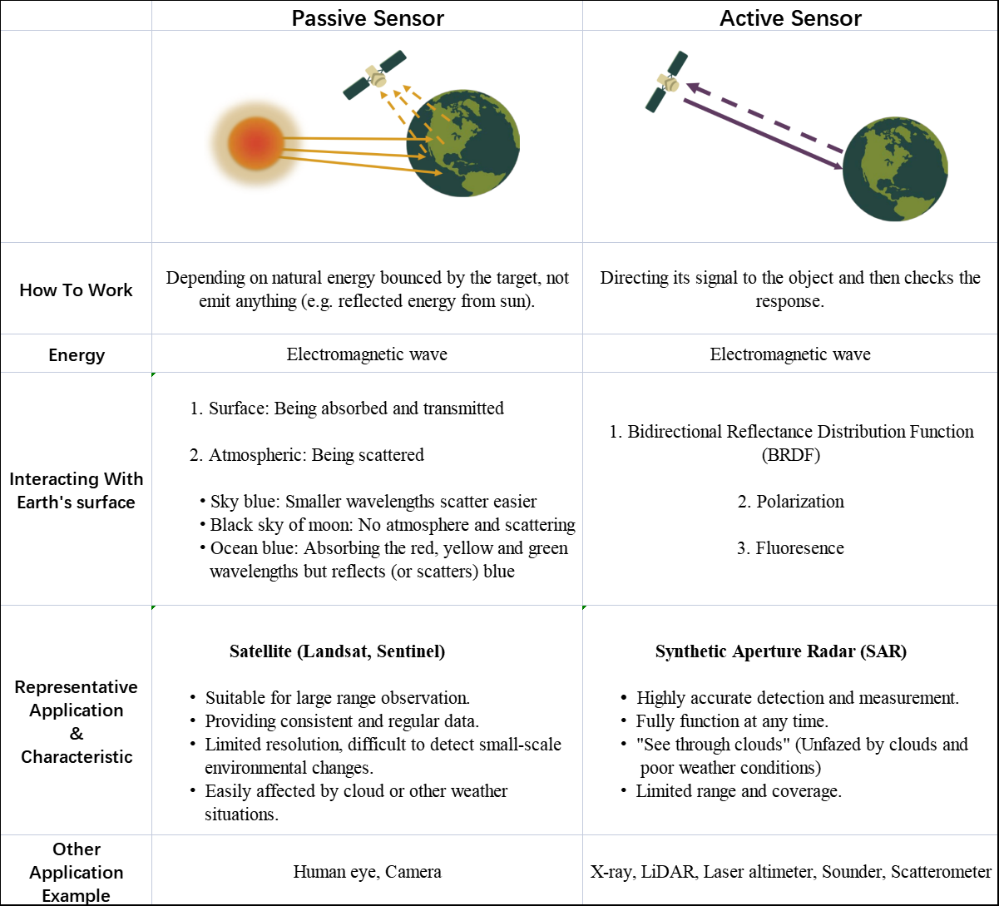
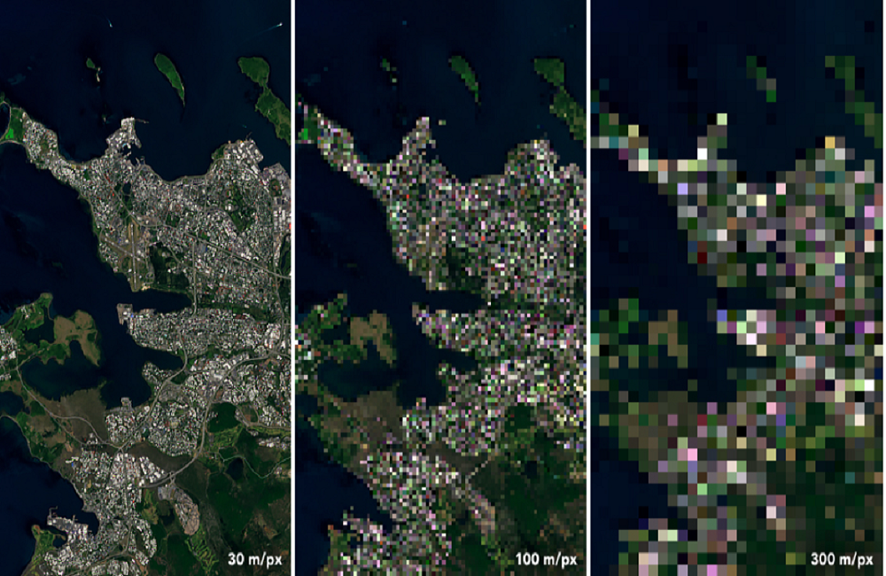
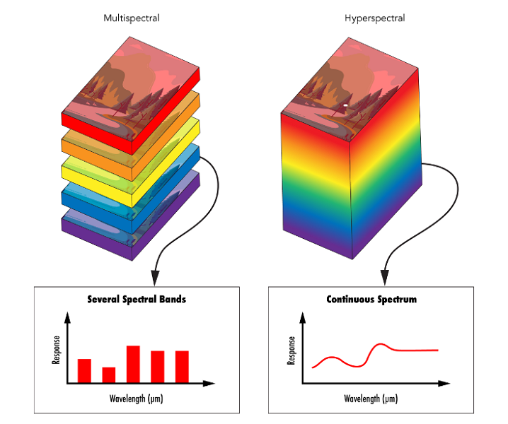
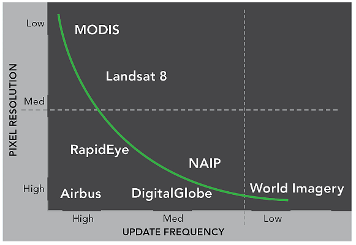
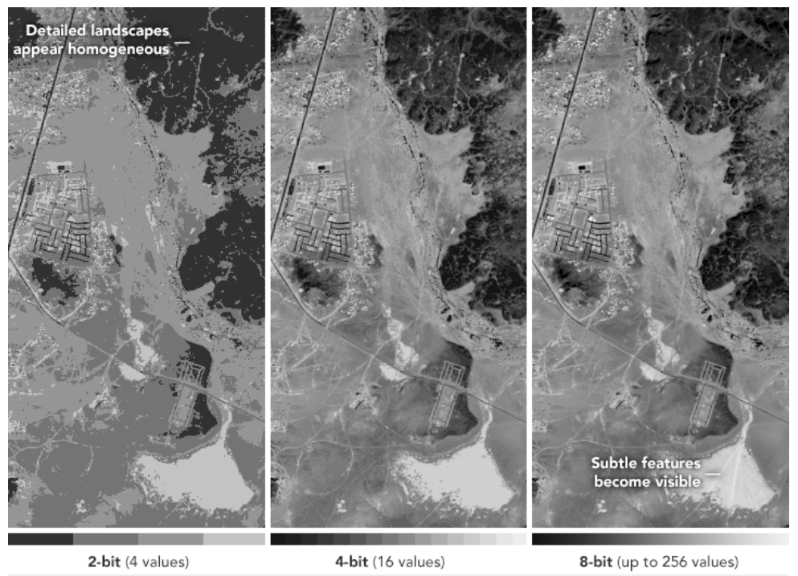

2 Getting star with remote sensing
This week, we have a preliminary understanding of the concept of remote sensing and how it is implemented. This is the basis for starting out interesting journey of remote sensing!
2.1 Summary
Remote sensing is the acquisition of information about an object or phenomenon without making physical contact with the object (from a distance), which is one of the specific methods of Earth observation. Remote sensing is an interesting and useful field with mass of data, it can detect the urban phenomena from a broader perspective and support for policy development. However, satellites also bring space junk. According to statistics, there are 3,000 dead satellites and around 34,000 pieces bigger than 10 centimetres in size littering space, which increases the hitting risk.
Remote sensing is achieved through sensors, which can be on satellites or mounted on aircraft. There are two main categories of remote sensors, active sensors and passive sensors. Passive sensors receive and detect electromagnetic waves emitted by the target itself or reflected radiation from nature, with no emission source of its own. While active sensors emit electromagnetic waves to the target, which in turn receives their reflection. Each sensor has its own strengths and weaknesses (Figure 1), and using them in combination typically results in more accurate prediction data.

source:EOS Data Analytics; GISGeography; Andrew’s Pages
Raster data is the most common remote sensing data format, and its encoding methods mainly includes band interleaved by line (BIL), band sequential (BSQ), band interleaved by pixel (BIP) adn GeoTIFF (most common). To measure the quality and potential detail of imagery, four resolutions are used as metrics:
Spatial Resolution
Size of the raster grid per pixel. Describing how detailed objects are in an image.Spectral Resolution
Number and size of bands that a remote sensing platform can capture- Wavelength
- Spectral signature (discrete or continuous)
- Constrained to atmospheric windows
- Measuring spectral reflectance - spectroradiometer
- Wavelength
Temporal Resolution
Revisit time of sensor, which refers to the frequency at which imagery is recorded for a particular area.Radiometric Resolution
The amount of information in each pixel, which refers to the ability of a sensor to identify and show small differences in energy



